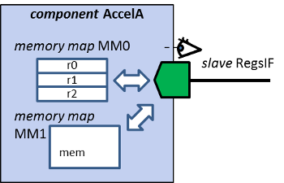

Memory maps editor contains the summary of the memory maps and memory remaps contained in the
component and can be used to add, remove and edit them.
Memory map specifies the addressable area seen through a slave bus interface, e.g. the data and
control register.
Memory remap describes additional memory map items that are mapped on the referencing slave bus
interface in a specific remap state. If multiple memory remap / state attributes are active, then the first
memory remap listed shall be selected.
Each memory map has a name and a textual description. Name is the only mandatory parameter.
Address unit bits (AUB) defines the number of data bits each address increment of the memory map
contains, e.g. 8b or 32b. The default setting for a memory map is byte addressable (8 bits). E.g. if AUB=8,
then 32-bit registers are at addresses 0x0, 0x4, 0x8... If AUB=32, they are in addresses 0x0, 0x1, 0x2...
AUB is the unit of base address and range in address map.
Interface binding ties the memory map
to slave interface used for access.

Each memory remap has a name and a textual description.
Remap state identifies the name of the remap state for which the optional memory map
elements are active. See remap states for further information on remap states. Memory remaps use their
parent memory map's address unit bits and interface binding.
Memory maps editor contains a context menu (right mouse button) providing following options: